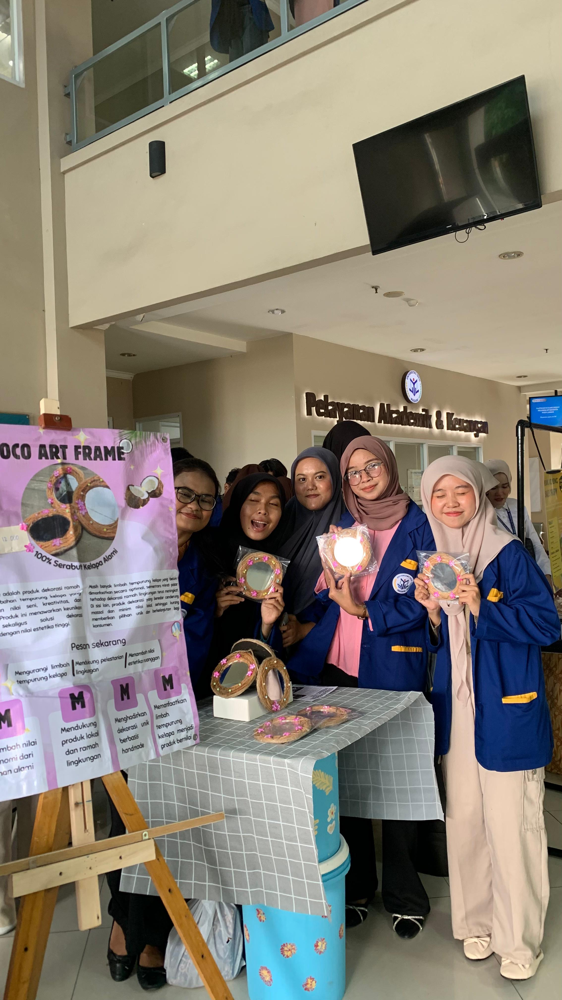
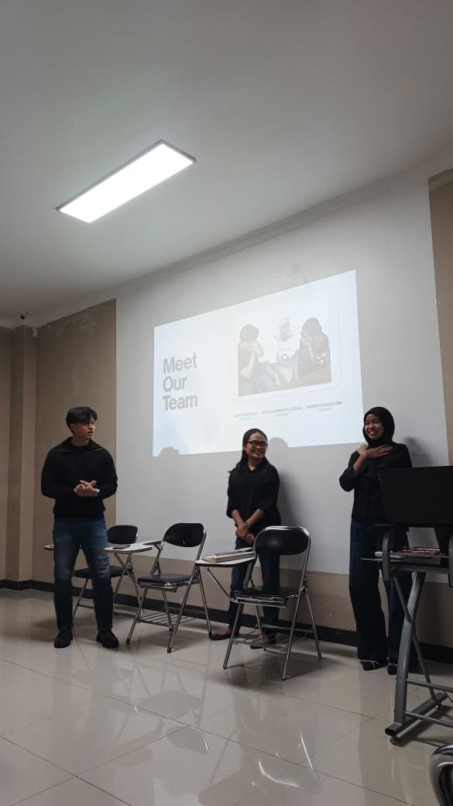
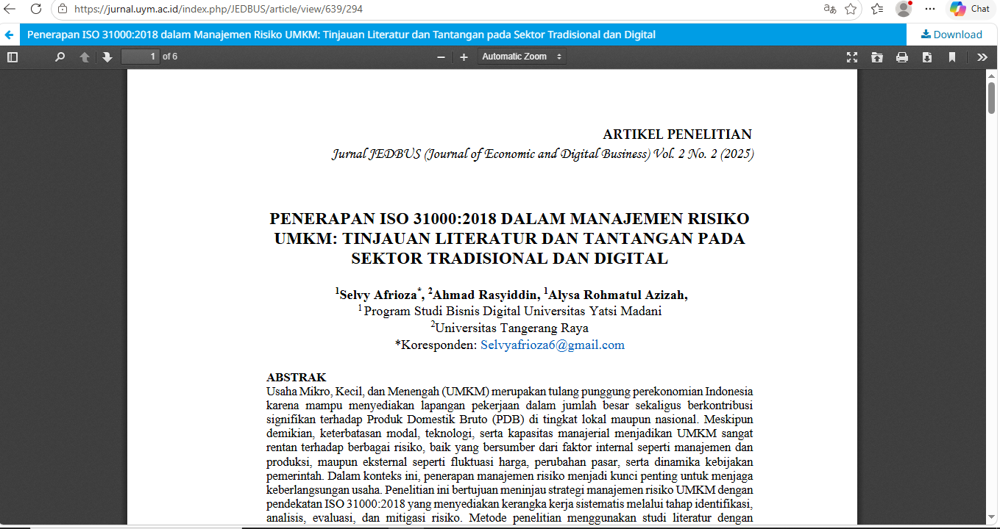

CocoArtFrame
Produk Kreatif & Pameran

Halo, saya Alysa Rohmatul Azizah, mahasiswa semester 7 Program Studi Bisnis Digital Fakultas Teknologi dan Bisnis, Universitas Yatsi Madani.
Saya memiliki ketertarikan pada dunia desain, social media marketing, dan analisis data. Saya senang mengeksplorasi ide-ide kreatif melalui desain, sekaligus mempelajari bagaimana strategi pemasaran dan data dapat digunakan untuk memahami kebutuhan pengguna serta mendukung pengambilan keputusan bisnis.
Bagi saya, dunia digital bukan hanya tentang menciptakan sesuatu yang terlihat menarik, tetapi juga tentang bagaimana kreativitas, teknologi, dan data dapat saling terhubung untuk menghasilkan solusi yang bermanfaat.
Perjalanan pendidikan yang menjadi bagian dari proses saya dalam mengembangkan pengetahuan dan kemampuan.
Madrasah Aliyah
Beberapa kemampuan yang saya gunakan dalam proses belajar, mengerjakan proyek, serta mengembangkan diri di bidang digital.
Beberapa project yang saya kerjakan selama proses belajar dan mengembangkan kemampuan di bidang bisnis digital.

Produk Kreatif & Pameran

Analisis Proses Bisnis
.jpeg)
Digital Business & Marketing

Research & Publication
Berbagai pengalaman dalam organisasi, kepanitiaan, pengabdian masyarakat, dan kegiatan edukasi yang menjadi bagian dari proses pengembangan diri.
Mengkoordinasikan kebutuhan publikasi, dekorasi, dan dokumentasi selama kegiatan KKN Gelam Jaya 1.
Terlibat dalam persiapan dan pelaksanaan rangkaian acara sebagai bagian dari Divisi Acara.
Berkontribusi dalam kegiatan publikasi, dekorasi, dan dokumentasi organisasi mahasiswa Bisnis Digital.
Berperan dalam mendukung kebutuhan administrasi dan koordinasi kegiatan Pengabdian kepada Masyarakat di Kelurahan Sumur Pacing.
Berperan sebagai MC dalam kegiatan Pengabdian kepada Masyarakat yang dilaksanakan di Nalagati RT 004/005, Kelurahan Mekar Sari, Kecamatan Panongan, Kabupaten Tangerang.
Berperan sebagai Sekretaris Utama dalam kegiatan Pengabdian kepada Masyarakat yang dilaksanakan di SMK Lab Business School.
Menyampaikan materi mengenai entrepreneurship kepada siswa kelas 11 SMAIT Latansa Cendekia melalui kegiatan presentasi dan penyampaian materi.
Sertifikat dan bukti pembelajaran yang mendukung perjalanan akademik serta pengembangan keterampilan saya.
Punya project, peluang kolaborasi, atau sekadar ingin terhubung? Jangan ragu untuk menghubungi saya.